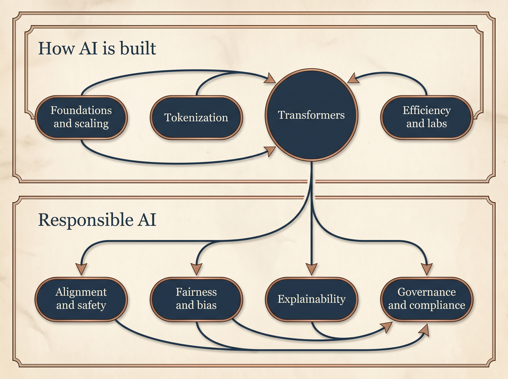

Fairness & Bias
Equitable outcomes across demographic and linguistic groups.
Classical ML
AIF360, Fairlearn
LLM era
BiasGRPO, red teaming
A personal reference portal for exploring how AI works and how responsibility attaches to it — seminal papers with enough context to orient you before you read the source. Browse broad, drill deep, follow connections.
This is not a course schedule or a note-taking app. It is a structured place to land when you want to understand a topic, find the seminal paper, read a short orientation, then jump to the original source. Click any paper title to expand a brief profile; use Read source to open arXiv or the official framework page.
Responsible AI sits on top of how models are built. Follow the stack down for technical depth; follow the RAI branches for policy and ethics.

Eight lenses practitioners use to organize Responsible AI work — from classical ML tooling to LLM-era methods. Papers in this map are tagged with one or more dimensions for future filtering.
How the technical hubs in this map connect to practitioner dimensions — useful when moving from "how models work" to "what responsibility means here."
| Technical hub | Primary dimensions | Example papers |
|---|---|---|
| Foundations | Sustainability, Governance | Chinchilla |
| Tokenization | Fairness, Social impact | BPE, ViT |
| Transformers | Explainability, Social impact | Attention, GPT-3 |
| Efficiency & labs | Sustainability, Governance, Social impact | DeepSeek-V3 |
| Alignment | Safety, Governance, Robustness | InstructGPT, AI Safety |
| Fairness | Fairness, Governance | Hardt, Datasheets |
| Explainability | Explainability | LIME, SHAP |
| Governance | Governance | Model Cards, NIST RMF |
Each hub groups papers, cases, and frameworks. Jump in anywhere — no prescribed order.
Scaling laws, compute-optimal training, how machines learn at scale.
BPE, WordPiece, SentencePiece, vision patches.
Attention, BERT, GPT — the architecture everything else builds on.
Chinchilla, DeepSeek, MoE, HPC co-design.
RLHF, Constitutional AI, DPO, AI safety taxonomy.
Formal fairness, disparate impact, dataset documentation.
LIME, SHAP, why attention is not explanation.
NIST RMF, EU AI Act, model cards, OECD.
Click a title to expand an orientation summary. Papers marked Core are the highest-impact starting set.
The paper that introduced the Transformer — self-attention, multi-head attention, and positional encoding replace recurrence entirely. Encoder-decoder structure for sequence transduction.
Every modern LLM (GPT, BERT, Claude, DeepSeek) descends from this architecture. If you read one technical paper, make it this one.
Architectural choices made here constrain everything later — including what alignment can and cannot fix. Interpretability debates often trace back to how attention works (or doesn't explain).
Encoder-only Transformer pretrained with masked language modeling (predict masked tokens) and next-sentence prediction. Uses WordPiece tokenization.
Split the field into encoder models (understanding) vs decoder models (generation). BERT dominated NLP benchmarks for years and established pretrain-then-finetune as standard practice.
Pretraining data curation is the first fairness intervention point — bias encoded in web-scale corpora enters here, before any deployment decision.
Read source → arXiv175B-parameter autoregressive decoder trained on diverse text. Demonstrates few-shot and zero-shot learning via in-context examples — no gradient updates needed at inference.
Established that scale alone unlocks qualitatively new capabilities. Direct ancestor of ChatGPT after RLHF was added on top.
Emergent capabilities are unpredictable — governance must be capability-aware, not just use-case-aware. You cannot fully enumerate what a scaled model might do.
Read source → arXivDerives scaling laws for compute-optimal training: for a fixed budget, model size and training tokens must scale together. Chinchilla (70B, 1.4T tokens) beats larger undertrained models.
Overturned the "bigger is always better" assumption. Data quality and quantity matter as much as parameters — reshaped how labs train frontier models.
Environmental and economic responsibility: wasteful over-scaling burns compute and carbon. Efficiency is an ethical question, not just an engineering one.
Read source → arXivByte-Pair Encoding splits text into subword units — balancing vocabulary size with coverage of rare words. The dominant tokenization strategy for OpenAI and most LLMs.
Tokenization choices affect multilingual fairness, compression of languages, and what the model can "see" in a prompt.
Read source → arXivLanguage-agnostic, unsupervised tokenizer treating input as raw Unicode. No language-specific preprocessing required.
Read source → arXivSplits images into fixed-size patches treated as tokens — applying Transformers to vision without convolutions at scale.
Bridges text and image modalities; multimodal RAI (bias in vision, deepfakes) builds on this representation choice.
Read source → arXiv671B-parameter MoE model (37B active) trained on 14.8T tokens. Multi-Head Latent Attention, FP8 mixed precision, DualPipe parallelism — HPC co-design for constrained GPU interconnect.
Demonstrated frontier-class models can be trained with clever architecture + infrastructure hacks, not just throwing more H100s at the problem.
Democratization vs proliferation: cheaper training lowers barriers but also spreads capability without safety culture. Geopolitical and open-weight debates intensified after this release.
Read source → arXiv Companion guide → FowlerRL-driven reasoning via Group Relative Policy Optimization (GRPO). Emergent chain-of-thought and self-verification with minimal supervised fine-tuning in the R1-Zero variant.
Read source → arXivAligns models from preference pairs without explicit RL — reparameterizes the reward model into a simple classification loss on the policy itself.
Simpler alignment pipeline now widely adopted; debate continues whether it matches RLHF safety properties at scale.
Read source → arXivThree-stage RLHF: supervised fine-tuning on demonstrations → train reward model from human rankings → PPO to optimize against the reward model. The pipeline behind ChatGPT.
Alignment inherits biases of human labelers. Who labels, how they're paid, and what preferences they hold shapes model behaviour.
Read source → arXivModels critique and revise their own outputs against a written set of principles ("constitution") — reducing reliance on human harmlessness labels.
Who writes the constitution? Values and power become explicit. RLAIF scales alignment but encodes designer ideology.
Read source → arXivTaxonomy of AI safety research problems: robustness, monitoring, value alignment, scalable oversight — framed as technical challenges, not just ethics.
Still the conceptual scaffold for safety research a decade later. Good entry point for understanding what "alignment" actually tries to solve.
Read source → arXivDefines equalized odds — equal true positive and false positive rates across groups. Provides post-processing methods to achieve it.
Fairness is mathematically definable but definitions conflict. You cannot satisfy all criteria simultaneously (see Chouldechova impossibility).
Read source → arXivProposes standardized documentation for datasets — motivation, composition, collection process, limitations — analogous to hardware datasheets.
Upstream responsibility: many harms originate in data, not model architecture. You cannot audit fairness without knowing what the model was trained on.
Read source → arXivLocal interpretable model-agnostic explanations — perturbs inputs to learn which features drive a single prediction.
Still cited in regulatory contexts for "explainable AI" — though limited for deep learning and LLMs.
Read source → arXivShapley values from cooperative game theory assign each feature a contribution to a prediction — unified framework connecting LIME, DeepLIFT, and others.
Read source → arXivShows attention weights often do not correlate with feature importance — alternative attention patterns can produce identical predictions.
Essential caution for the LLM era: do not treat attention heatmaps as explanations. Mechanistic interpretability is a different pursuit.
Read source → arXivStandardized documentation: intended use, factors (demographics, geography), metrics, ethical considerations, caveats.
Industry-standard transparency artifact — increasingly expected by regulators and enterprise procurement.
Read source → arXivVoluntary US framework: Govern → Map → Measure → Manage. Risk taxonomy and controls for organizations building or deploying AI.
Bridge from academic concepts to operational practice — the document enterprises and auditors reference.
Read source → NISTFlat list — jump to any paper profile or open the source directly.
| Title | Year | Hub | Dimensions | |
|---|---|---|---|---|
| Attention Is All You Need | 2017 | Transformers | XAI, Impact | source |
| BERT | 2018 | Transformers | Fairness, Gov | source |
| GPT-3 | 2020 | Transformers | Safety, Impact | source |
| Chinchilla | 2022 | Foundations | Sustain, Gov | source |
| BPE | 2016 | Tokenization | Fairness, Impact | source |
| SentencePiece | 2018 | Tokenization | Fairness | source |
| ViT | 2020 | Tokenization | Fairness, Impact | source |
| DeepSeek-V3 | 2024 | Efficiency | Sustain, Gov, Impact | source |
| DeepSeek-R1 | 2025 | Alignment | Safety, XAI | source |
| InstructGPT | 2022 | Alignment | Safety, Fairness | source |
| Constitutional AI | 2022 | Alignment | Safety, Gov | source |
| DPO | 2023 | Alignment | Safety, Gov | source |
| Concrete Problems in AI Safety | 2016 | Alignment | Safety, Robust | source |
| Equality of Opportunity | 2016 | Fairness | Fairness | source |
| Datasheets for Datasets | 2018 | Fairness | Gov, Fairness | source |
| LIME | 2016 | Explainability | XAI | source |
| SHAP | 2017 | Explainability | XAI | source |
| Attention is Not Explanation | 2019 | Explainability | XAI | source |
| Model Cards | 2019 | Governance | Gov | source |
| NIST AI RMF | 2023 | Governance | Gov | source |
Real incidents that connect theory to practice. Each links back to papers in the library.
ProPublica (2016) showed racial bias in recidivism risk scores used in US sentencing. Northpointe disputed the methodology — demonstrating that which fairness metric you choose changes who appears "right."
Lifecycle: Data (historical bias) · Evaluate (metric dispute) · Deploy (no appeals) · Govern (no audit mandate)
Read next: Hardt · ProPublica investigation
Twitter chatbot learned toxic behaviour from users within 16 hours (2016). Alignment is not only a training problem — deployment context and adversarial users matter.
Read next: Constitutional AI · AI Safety taxonomy
Resume-screening system penalized women's applications; scrapped in 2018. Historical hiring data encoded past discrimination into the model.
Read next: Datasheets · EU AI Act (employment = high-risk)
Frontier performance at a fraction of reported US lab cost (2024–25). Sparked debate: democratization of AI vs proliferation of capability without proportional safety culture.
Read next: DeepSeek-V3 paper · Open vs closed models
World's first comprehensive AI law — risk-based tiers, transparency duties, penalties. Turns abstract RAI principles into legal obligations for deployers.
Read next: NIST AI RMF · Model Cards
AI Incident Database — ongoing catalogue of real-world AI harms.
| Resource | What it gives you | Link |
|---|---|---|
| NIST AI RMF 1.0 | Govern · Map · Measure · Manage | NIST · profile |
| NIST GenAI Profile | Generative-AI-specific risks | |
| EU AI Act | Legal compliance, risk tiers | Summary |
| OECD AI Principles | International policy baseline | OECD |
| Stanford AI Index | Annual RAI metrics & trends | HAI |
| Fairness and Machine Learning (book) | Fairness textbook | fairmlbook.org |
Where experts disagree — useful for forming your own view.
| Topic | Side A | Side B |
|---|---|---|
| RLHF vs alternatives | RLHF works at scale (InstructGPT) | DPO / CAI simpler or safer (DPO, CAI) |
| Fairness metrics | Demographic parity | Equalized odds (Hardt) |
| Explainability | LIME/SHAP suffice for regulation | Attention ≠ explanation (Jain & Wallace) |
| Scaling | Bigger = better (GPT-3) | Better data beats raw scale (Chinchilla) |
| Open vs closed weights | Democratizes AI (DeepSeek) | Enables safety testing before release |
Cutting-edge sources worth knowing — not an exhaustive feed.
Evaluating a new paper? Ask: Is it novel vs this library? Is it credible? Is it connected to an active debate? If not, skip.
| Term | Meaning |
|---|---|
| Tokenization | Splitting text into subword units for model input |
| Self-attention | Each token attends to all others to build context |
| RLHF | Reinforcement Learning from Human Feedback |
| Alignment | Steering models toward intended values and behaviour |
| MoE | Mixture of Experts — sparse sub-network activation |
| Model card | Standardized documentation of model capabilities and limits |
| Equalized odds | Equal TPR and FPR across demographic groups |
| AI RMF | NIST risk framework: Govern, Map, Measure, Manage |